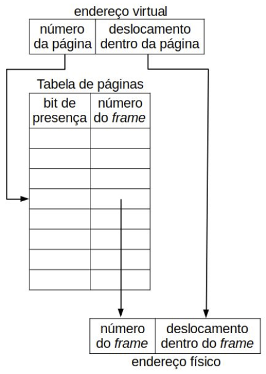

Disciplinas
-
SISTEMAS COMPUTACIONAIS. Concluído
Materiais
Vídeo 1 - [UFMS Digital] Sistemas Computacionais - Módulo 3. sendProf° ministrante: Dra. Nahri Moreano.
Conteúdo
Sistemas Operacionais.
Sistema Operacional (SO).
- Software que executa diretamente sobre o hardware do computador
- Provê a base para todas as demais camadas de software
Objetivos do SO.
- Gerenciar recursos do hardware do computador:
- SO permite que recursos do hardware sejam utilizados pelos programas de forma controlada e eficiente
- Fornecer interface entre computador e programas do usuário:
- SO esconde do programador detalhes do hardware e provê interface amigável para ele usar o computador
- SO presta serviços para os programas
Principais Módulos do SO.
- Gerência de processos.
- Gerência de memória.
- Gerência do sistema de arquivos.
- Gerência de entrada/saída.
- Segurança e proteção.
Gerência de Processos.
- Processo: programa em execução
- Cada processo possui:
- Áreas de código (instruções de máquina), de dados e de pilha no espaço de endereçamento de memória
- Conteúdo dos registradores do processador
- Outros recursos
Multiprogramação.
- Capacidade do SO de gerenciar vários processos executando concorrentemente na mesma CPU
- Somente um processo está ativo a cada momento (executando na CPU)
- SO faz chaveamento (troca de contexto) de um processo para outro
- Vantagens:
- Permite que vários processos sejam executados “ao mesmo tempo” (na verdade, concorrentemente)
- Permite que um processo execute no processador enquanto outro processo realiza uma operação de entrada/saída
- Aumenta a utilização do processador e dos demais recursos do hardware (memória e dispositivos de entrada e saída)
Estados de um Processo.
- Durante sua execução completa, processo passa por vários estados:
- Em execução: processo está sendo executado pela CPU nesse momento
- Pronto: processo deseja usar a CPU nesse momento, porém ela está alocada para outro processo
- Bloqueado (ou em espera): processo não pode executar na CPU no momento pois está aguardando evento externo ocorrer ou alocação de outro recurso
Escalonamento de Processos.
- Escalonador: módulo do SO que seleciona, dentre os processos prontos, o próximo a executar
- Escalonamento: preemptivo ou não-preemptivo
- Algoritmos de escalonamento:
- Primeiro a chegar, primeiro a ser servido (FCFS - First-Come, First-Served)
- Tarefa mais curta primeiro (SJF - Shortest Job First)
- Escalonamento por chaveamento circular (RR - Round-Robin)
- Escalonamento por prioridades
- …
Multithreading.
- Thread: fluxo de execução dentro de um processo
- Um processo pode possuir várias threads
- Cada thread possui:
- Área de pilha no espaço de endereçamento de memória
- Conteúdo dos registradores do processador
- Cada thread compartilha com outras threads do processo:
- Áreas de código e de dados no espaço de endereçamento de memória
- Outros recursos
Gerência de Memória.
- Módulo do SO que gerencia o sistema de memórias
- Programa, para ser executado, deve estar carregado na memória
- Multiprogramação: SO permite que vários processos sejam executados concorrentemente
- Portanto, SO precisa manter vários processos na memória ao mesmo tempo
Memória Virtual.
- Mecanismo de gerência de memória:
- Implementado pelo SO com suporte do hardware
- Implementado juntamente com mecanismo de alocação particionada (paginação, segmentação ou segmentação paginada)
- Permite separação entre espaço de endereçamento lógico (virtual) do processo e memória física (real)
- Vantagens:
- Permite que vários programas estejam presentes na memória ao mesmo tempo
- Permite que programa seja executado sem estar inteiro na memória física
- Mecanismo transparente para programador
- Tira proveito do princípio de localidade
Memória Virtual com Paginação.
- Espaço de endereçamento lógico (virtual) do processo: dividido em partes de tamanho fixo (páginas)
- Memória física: dividida em partes do mesmo tamanho (frames ou molduras de página)
- Transferências entre memória virtual (no disco) e memória física: páginas inteiras
- Durante execução, processo acessa endereço lógico:
- SO, com suporte do hardware, traduz endereço lógico em endereço físico, usando tabela de páginas
- Se endereço lógico não está presente na memória física, SO carrega página faltosa na memória física
Tradução do Endereço Lógico em Endereço Físico.
Suporte do Hardware para Mecanismo de Memória Virtual com Paginação.
- Unidade de gerenciamento de memória (MMU - Memory Management Unit):
- Componente do hardware de suporte ao mecanismo de memória virtual
- Faz a tradução do endereço virtual em endereço físico
- Buffer para tradução de endereços (TLB - Translation Lookaside Buffer):
- Pequena memória em hardware para acelerar a tradução do endereço virtual em endereço físico
- Contém algumas informações da tabela de páginas